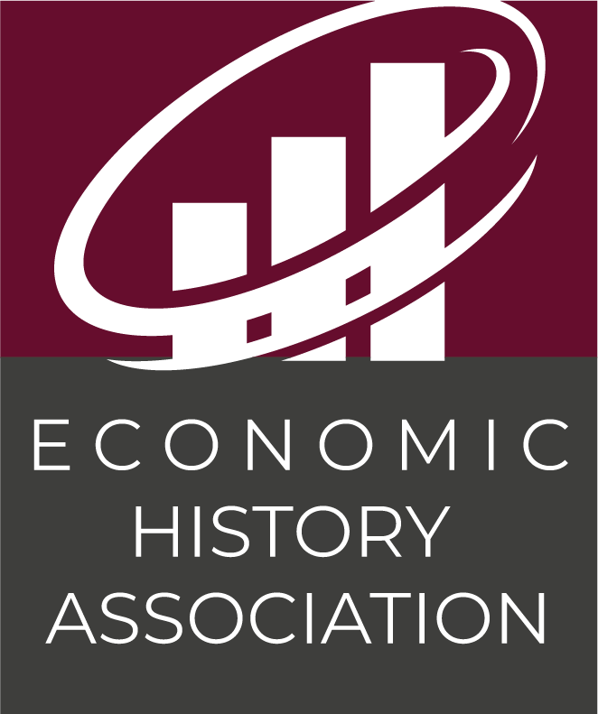

The Junior Economic History Conference is a small, seminar-style workshop dedicated to early career researchers in economic history. Each spring, ten junior economic historians will present full-length papers across a weekend, with substantial time for discussion. The first edition will be hosted at Rhodes College on 10–11 April 2027, with participants arriving on Friday 9 April. The conference is endorsed by the Economic History Association.

The conference is open to junior researchers in economic history who hold a PhD. For scholars at a tenure-granting institution, “junior” means pre-tenure; for scholars at other institutions, it means within ten years of obtaining the degree. Submissions are welcome from researchers at liberal-arts colleges, R1 and R2 universities, government agencies, and research institutions outside academia.
Authors submit a full paper with their application. Each selected paper receives a 60-minute slot. Presentations follow the norms of an economics seminar with questions throughout. The conference runs across two days: a Friday-evening arrival, a full day of sessions and dinner on Saturday, and a half-day of sessions on Sunday. The workshop is small and features 10 papers. Participants are required to read the introduction of all papers on the program before attending, and encouraged to read the drafts fully.
The submission deadline is 30 November 2026. See the call for papers for full details.
This conference is currently jointly organized by Pier Paolo Creanza (Swarthmore College), João Tampellini (Rhodes College), and Danielle Graves Williamson (Williams College).